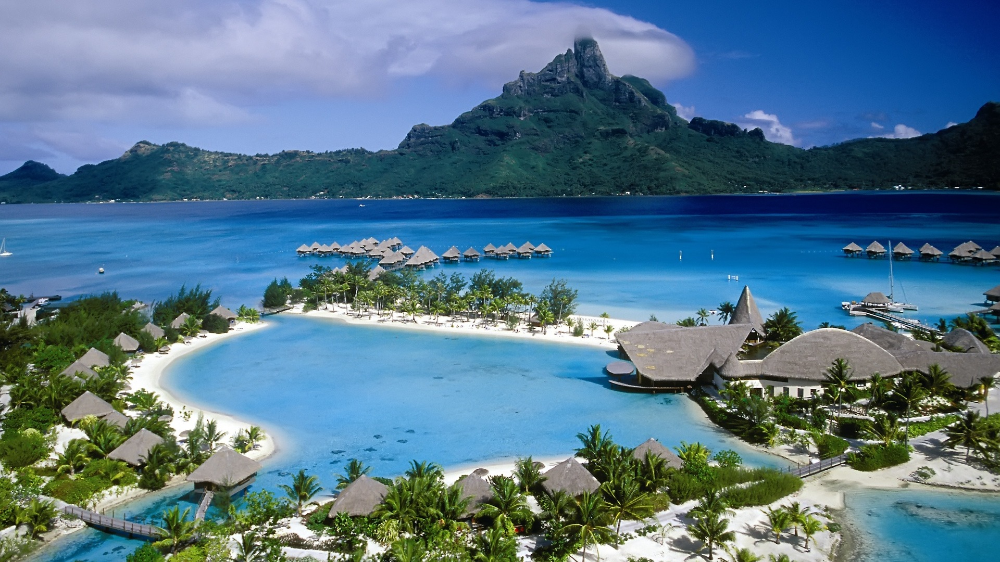

Port Blair ,is the capital city of the Andaman and Nicobar Islands, a union territory of India in the Bay of Bengal. It is also the local administrative sub-division (tehsil) of the islands, the headquarters for the district of South Andaman and is the territory's only notified town.Port Blair serves as the entry point for visiting the Andaman and Nicobar Islands.

